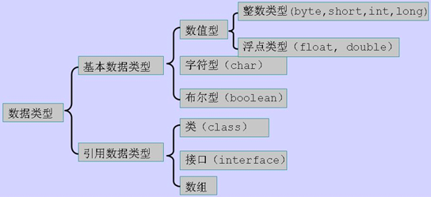

按照课程顺序进行记录，笔记漏掉了不少东西，慢慢在补充吧。
基本的输入输出
import java.util.Scanner;
Scanner in = new Scanner(System.in);
int num = in.nextInt();
System.out.println("hi");浮点数计算
10/3与10.0/3或者结果不同，这点类似C语言。
浮点数计算是有误差的，C语音，Python里面都一样。
比如1.2-1.1或者1.1+2.2输出非0.1或者3.3。这是由计算机内部浮点运算单元决定的。
基本数据类型

简单类型 | boolean | byte | char | short | Int | long | float | double | void |
二进制位数 | 1 | 8 | 16 | 16 | 32 | 64 | 32 | 64 | -- |
封装器类 | Boolean | Byte | Character | Short | Integer | Long | Float | Double | Void |
包裹类型只需要将基本类型首字母大写。
对于数值类型的基本类型的取值范围，我们无需强制去记忆，因为它们的值都已经以常量的形式定义在对应的包装类中了。如：
基本类型byte 二进制位数：Byte.SIZE最小值：Byte.MIN_VALUE最大值：Byte.MAX_VALUE
基本类型short二进制位数：Short.SIZE最小值：Short.MIN_VALUE最大值：Short.MAX_VALUE
基本类型char二进制位数：Character.SIZE最小值：Character.MIN_VALUE最大值：Character.MAX_VALUE
基本类型double 二进制位数：Double.SIZE最小值：Double.MIN_VALUE最大值：Double.MAX_VALUE
注意：float、double两种类型的最小值与Float.MIN_VALUE、 Double.MIN_VALUE的值并不相同，实际上Float.MIN_VALUE和Double.MIN_VALUE分别指的是 float和double类型所能表示的最小正数。也就是说存在这样一种情况，0到±Float.MIN_VALUE之间的值float类型无法表示，0 到±Double.MIN_VALUE之间的值double类型无法表示。这并没有什么好奇怪的，因为这些范围内的数值超出了它们的精度范围。
Float和Double的最小值和最大值都是以科学记数法的形式输出的，结尾的"E+数字"表示E之前的数字要乘以10的多少倍。比如3.14E3就是3.14×1000=3140，3.14E-3就是3.14/1000=0.00314。
布尔型只能为true和false，（Python中首字母大写）,Java中不能用1或0代替真假，和C语言，Python不同。
对于char，中文采取Unicode编码，中文占两个字节。
Java基本类型存储在栈中，因此它们的存取速度要快于存储在堆中的对应包装类的实例对象。从Java5.0（1.5）开始，JAVA虚拟机（Java Virtual Machine）可以完成基本类型和它们对应包装类之间的自动转换。因此我们在赋值、参数传递以及数学运算的时候像使用基本类型一样使用它们的包装类，但这并不意味着你可以通过基本类型调用它们的包装类才具有的方法。另外，所有基本类型（包括void）的包装类都使用了final修饰，因此我们无法继承它们扩展新的类，也无法重写它们的任何方法。
基本类型的优势：数据存储相对简单，运算效率比较高。
包装类的优势：有的容易，比如集合的元素必须是对象类型，满足了java一切皆是对象的思想。
常量用final修饰。
关系运算符
Java提供了六个关系运算符：
== 相等
!= 不相等
> 大于
>= 大于或等于
< 小于
<= 小于或等于
注意其中有两个字符的运算符：==、>=和<=的两个字符必须紧紧连在一起，中间不能插入空格。< p="">
逻辑运算符
在java的逻辑运算符中，有这么四类&&（短路与）、&（与）、||（短路或）、|（非短路或）。
&&和&都表示与，&&表示第一个条件为false时，后面的条件就不执行，&要对所有的条件都进行判断。
||和|都表示或，||表示第一个条件为true时，后面的条件都不判断；| 对所有的条件进行判断。
&与|目前我了解的是加入前者已经决定最终逻辑关系，但后边调减书写错误单个&和|运行会报错，而&&和||不会。
算数运算
+ - * / % ++ --
位运算
& | ~ ^ >> <<>>>
最笨的方法，加()
基本语法
if
if-else
if-else if
switch-case 可以是int也可以string
break,continue
Java中可以通过标号的形式break或continue代码块
do-while
while
for
其中for(int i=1;i++;i
i++
++i
i--
--i
同C
for-each循环
for(type element: array)，丢失了下表信息，这点不如php的for-each
数组
int[] nums = new int[10]
数组对象的内部成员length，代表数组内元素的个数，配合for遍历数组。
数组的赋值
对某个元素赋值arr[i]=x
对所有 arr[] = {a,b,c,d}。
这里注意一下，数组变量是数组的管理者，而非数组的本身。就像sring变量是字符串的管理者，每次修改string是在内存中产生了新的内存地址，并非修改了原有内存地址中的字符串。
数组必须创建出来后交给数组变量来管理，数组变量之前的赋值是管理权限的赋予，数组变量之间的比较是判断是否管理同一个数组。
二位数组
float[][] nums = new float[5][5];
int[][] nums = {{100,200,300,400},{500,600,700,800},{900,1000,1100,1200,1300}};
字符类型
字符也是Java中基础的数据类型之一，Java采用Unicode16表达字符，在所有的机器上，不管CPU、操作系统和本地语言，字符类型是一致和统一的。一个字符的常量是用单引号包围起来的一个字符，如'a'、'*'、'好'。一个汉字也是Unicode的一个字符，所以也是Java的一个字符。
单引号引的数据 是char类型的，双引号引的数据 是String类型的。
单引号只能引一个字符，而双引号可以引0个及其以上。
包裹类型
基本类型也有提到
可以
Integer i = 10;
Integer i = new Integer(10);
目前Java版本已经支持自动打包解包。
字符串
String a = "abc";
String b = new String("abc");
实际运用中，我们要避免第二种方式，第二种方式创建了两个String对象。首先，Java虚拟机创建了String对象“abc”。然后，java虚拟机创建一个新的String对象，并把字符串“abc”传入构造函数。这是一次完全没有必要的构造，既影响了性能，也提高了代码阅读难度。
字符串变量和数组变量类似，它并不存放字符串，不是字符串的所有者，它是字符串的管理者。
Java的字符串还是一种特殊的“不可变”对象，所有的字符串操作都是产生一个新的字符串，而不是对原来的字符串的修改。对这一点的理解颇为重要。
拼接用+,注意运算顺序（字符串和整数运算）
输入字符串
in.next()空格为分割标志
in.nextLine（）换行符
.length取长度
.charAt(index)返回index位置的单个字符
.substring(n)得到n到结束的子字符串
.substring(x,y)x到y之前的内容
寻找字符
.indexOf(c)得到c字符的位置，返回-1表示不存在。
.indexOf(n,c)从n开始寻找
.lastIndexOf()从右边开始找
.startsWith(t)
.endsWith(t)
.strim()
.replace(c1,c2)
.toLowerCase()
.toUpperCase()
函数
Java的函数必须定义在类的内部，成为类的成员。定义一个函数，要像这样写：
<返回类型> <方法名称>(<参数表>) {
<方法体>
}
返回类型是这个函数运行结束时要返回给调用者的数据的类型，函数可以返回基本数据类型、对象或者void。返回void表示这个函数不返回任何值。函数名称是一个Java名字，一样要遵循和变量一样的命名规则。参数表是0个或1个或多个参数定义，用逗号’,’分隔。
在这个阶段，我们要在所有的函数的返回类型前面加上关键字“static”。static表示这个函数属于这个类，而不属于这个类的任何对象，因此我们才可以不制造这个类的对象，而直接从main()函数中调用它。
当一个函数被调用时，程序就转到这个函数中去运行，函数体里的语句就一条一条地被调用。一旦函数运行结束，就又回到调用它的地方去继续运行。
最好做到单一出口，函数参数只传值不传地址。所谓的引用赋值传的是管理者的值。
参考
【1】慕课网浙大翁恺老师的零基础学Java语言